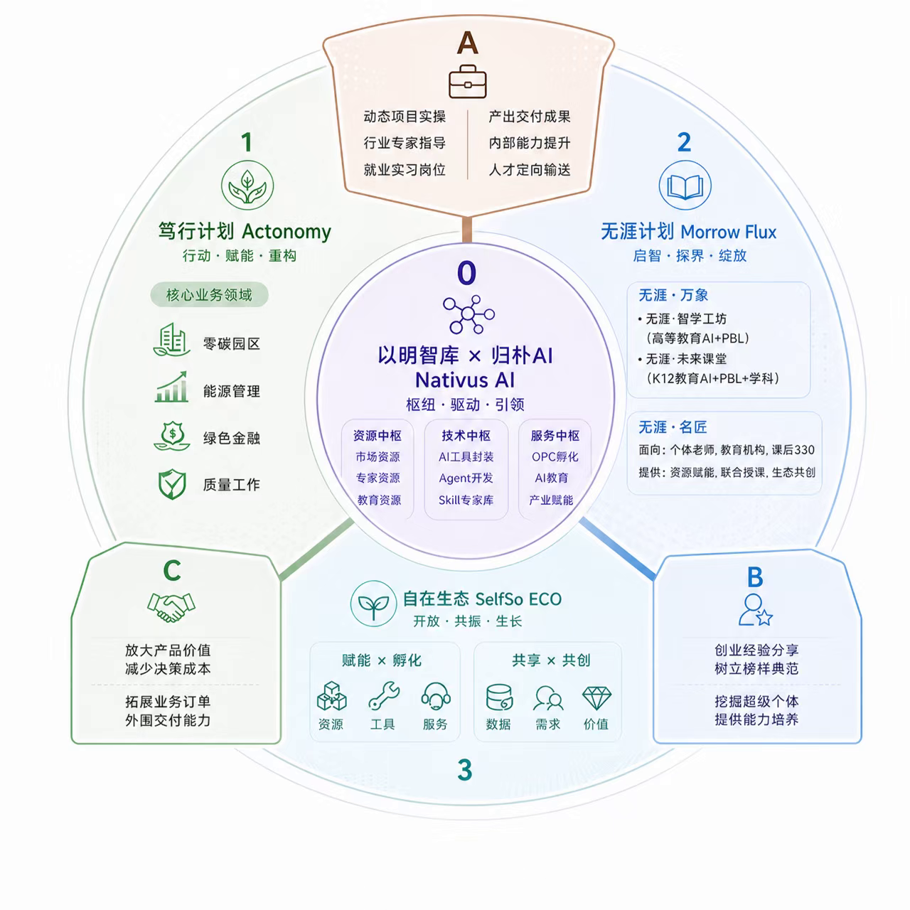

周学习记录 / W26 · 2026.06.22 — 2026.06.28
学习起点：从AI工具看向实际应用场景
6月22日，教师向郑策分享Nativus AI业务生态图，为后续认识AI与实际工作的关系提供参考。


本周学习输入
教师提供一份Nativus AI业务生态图，把AI应用放在业务场景中介绍。当前这一周呈现的是学习资料输入。
教师支持
资料通过私聊直接发送给郑策，后续的产品调研与项目实践将沿着“工具可以帮助什么人、完成什么工作”的方向展开。
查看本页来源与时间定位
本页根据课堂、师生交流与作品资料整理。文档摘页和课堂图解均在图片说明中标明。
ZC-0064｜2026-06-22 16:11:05
ZC-0064｜2026-06-22 16:11:05